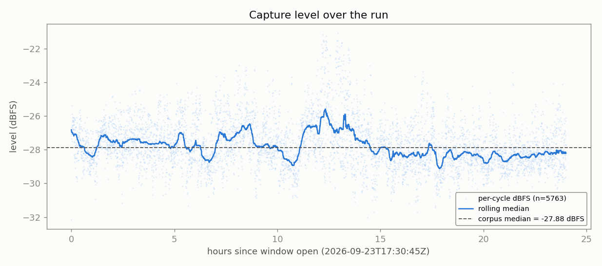
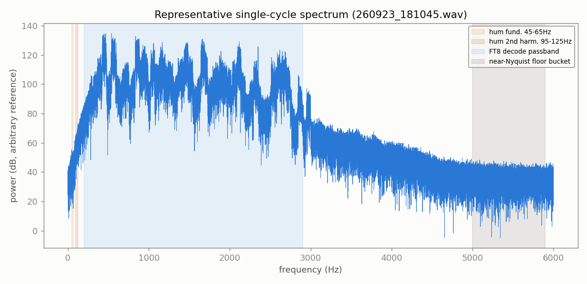
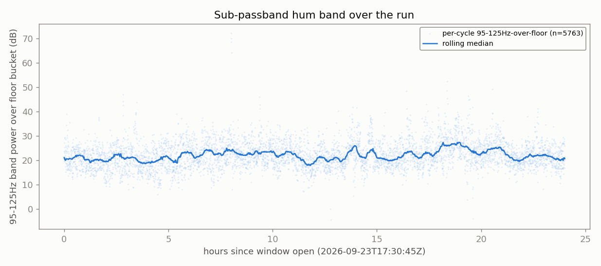
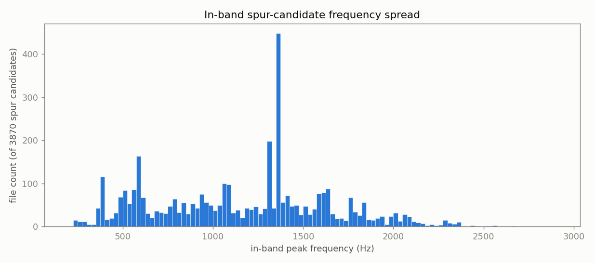
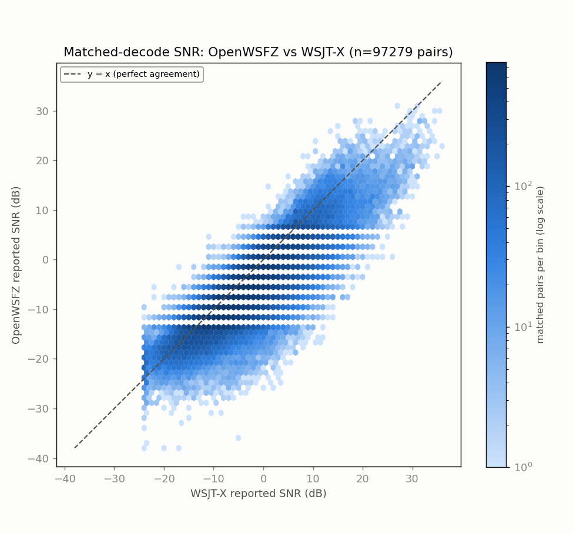
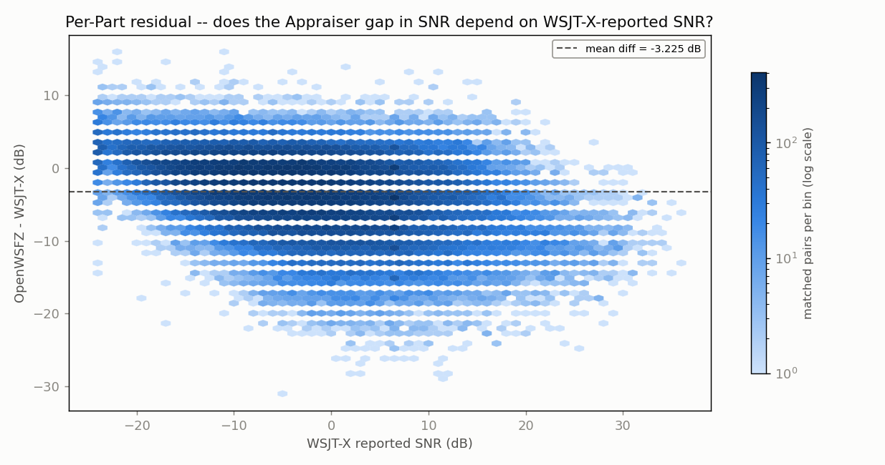
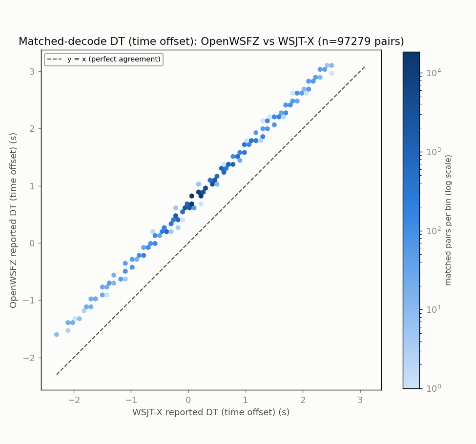
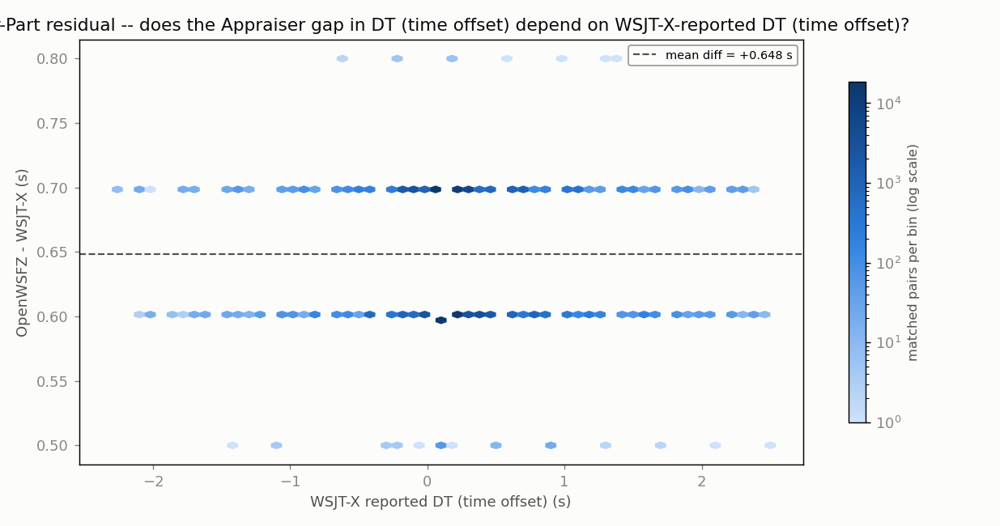
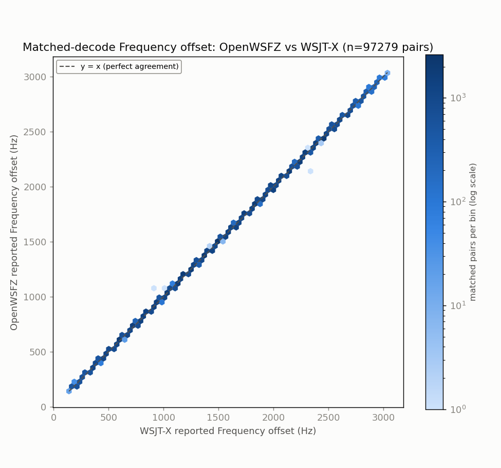
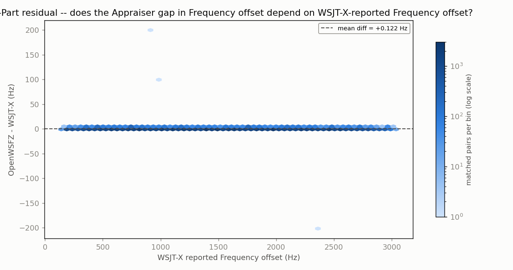

Run: 20260923_1730_endurance_run -- 40m, direct USB Audio CODEC (Voicemeeter/CABLE bypassed for this arm)
Window (UTC): 2026-09-23T17:30:55Z -> 2026-09-24T17:30:55Z (24.0h)
Build: decoding_improvement@84cac11919e5, shim 20260054, daemon v0.50, DLL SHA256 38a21f84…589a1cba, osd_nhard_max=40
Purpose (Captain, 2026-09-24): A/B probe -- does reading the same physical Microphone (2- USB Audio CODEC ) device directly (no Voicemeeter routing) change anything, as a precondition check before this could ever become the default. Gated on issues #187 (stale-GUID auto-restart never re-resolves) and #188 (watchdog/status blind without a WebSocket client) being resolved -- this stays experimental regardless of today's result.
Generated: 2026-09-24T17:39:29Z (date -u, HK-017)
state.json / HANDOFF.md: phase DONE. events.jsonl: daemon_start -> window_open -> daemon_stop ("window end") -> gathered (exit 0). Zero restart or problem events for the full 24h -- supervisor.log shows exactly one PRECHECK (all_pass: true, 11/11) and one WINDOW OPEN line between start and teardown.supervisor.log: "HK-019 orphan check: clean").AudioWatchdog/DataFlowMonitor genuinely never ticked -- #188's blind spot was live here. It didn't matter: the supervisor's own independent check (newest cycle-audio/ WAV mtime, polled every 30s, 3-strike/60s staleness gate) never fired either, and is corroborated directly by this report's own spectrum scan below (zero dropouts, format-consistent through all 5763 files). No evidence a #187-class stale-GUID stall occurred.Method: every one of the 5,763 15s/12kHz mono cycle WAVs in owsfz/wav/ read in full (no subsampling) -- peak/clip/DC/RMS, FFT-based band powers (FT8 passband 200-2900 Hz, sub-passband hum bands 45-65/95-125 Hz, near-Nyquist floor bucket 5000-5900 Hz per the existing gap-census-a convention), and an in-band peak-to-local-median spur check. Script: spectrum_scan.py (this directory); full per-file results + summary: spectrum_scan_summary.json (this directory).
| Check | Result |
|---|---|
| Files read / errors | 5,763 / 5,763 ok, 0 errors |
| Format consistency | fs=12000 and nframes=180000 on every single file -- 100% consistent |
| Clipping (samples >= 32760) | 0 files |
| Dropouts (dBFS > 20dB below corpus median) | 0 files |
| Saturation/hot spikes (> 20dB above median, non-clipped) | 0 files |
| Level stability | median -27.88 dBFS, MAD 0.87 dB, full range -32.16 to -21.07 dBFS across the whole 24h -- no gain steps, no drift |
| Sub-passband hum bands (45-65/95-125 Hz) | elevated ~20-25 dB over the near-Nyquist floor bucket, constant across all 24 hourly bins (median 18.9-26.0 dB, no time-correlated onset) |
| In-band (200-2900 Hz) narrowband peaks >40dB over local median | present in 3,870/5,763 files (67%); one frequency (1375 Hz) stands out visually -- run down below, resolved as a real station, not an artifact |

No gain steps, no dropouts, no drift -- the rolling median never leaves a ~3.5 dB band around the corpus median for the entire 24h.

Shows where the analysis bands actually sit: the sub-passband hum bands are a thin sliver hard against 0 Hz, well separated from the FT8 decode passband (200-2900 Hz) where essentially all the signal energy lives, and the near-Nyquist floor bucket (5000-5900 Hz) sits on the noise tail past the passband.
A fixed low-frequency line 20+ dB over the noise floor is the classic ground-loop/hum signature you'd expect from removing Voicemeeter's isolation, so this was worth running down rather than just noting.

20260922_2056, same radio, same band, Voicemeeter Out B1 routing -- the standing chain) and ran the identical hum-band-over-floor measurement: median 23.17 dB, i.e. statistically the same magnitude as this run's 20-25 dB (see the reference line above). The elevation predates the chain change -- it is not attributable to bypassing Voicemeeter.Also irrelevant to decoding either way: both hum bands sit well below the 200-2900 Hz range FT8 content and OpenWSFZ's own decode passband occupy (see the annotated spectrum above).

A >40dB-over-local-median peak in the FT8 band is exactly what a strong, correctly-decoded station's tone looks like, so this detector cannot by design separate legitimate signal from a true interferer -- which is why the one visually prominent bar (1375 Hz, 427/3,870 spur-flagged files by the scan's 5Hz binning) was run down against owsfz/ALL.TXT rather than left as a caveat. NFR-021: no callsign or message text is reproduced here -- aggregate counts only.
Every other bar in the histogram is smaller still and spread across the whole passband -- consistent with ordinary band traffic, no evidence of a persistent fixed-frequency interferer.
Verdict: no spectral anomaly attributable to the direct-USB-CODEC routing change. Capture-chain swap is clean at the audio-capture level -- no clipping, no dropouts, no gain steps, no format breakage; the sub-passband hum signature predates the change (control-checked); and the one visually prominent in-band peak is a real, confirmed station, not an artifact.
Full table: anova_report.md Section 4 (regenerated this session with --hours 24.0 after the first pass silently omitted this run's own row -- caught before reading, not after).
Only two historical rows are directly comparable (live WSJT-X reference, 40m, nhard=40, same build/shim -- per the standing rule, never pool against the pre-2026-09-12 nhard=60 40m rows or against 20m rows):
| Date | Hours | Radio chain | Matched % of ref | OWS-only % | SNR gap (dB) | DT gap (s) |
|---|---|---|---|---|---|---|
| 2026-09-22 | 12.0 | Yaesu FT-991A -> Voicemeeter Out B1 | 59.8 | 0.8 | -2.824 | +0.6548 |
| 2026-09-23/24 (this run) | 24.0 | FT-991A -> USB Audio CODEC, direct | 61.1 | 0.7 | -3.225 | +0.6484 |
Did anything change?
- DT gap, matched %, and OWS-only % all sit within the range this pair already established -- no material movement.
- SNR gap moved from -2.824 dB to -3.225 dB (~0.4 dB more negative for OpenWSFZ relative to WSJT-X) -- the largest single-step SNR-gap move in the nhard=40 series so far, and it lands on exactly the row that differs by capture chain.
- Not concluding causation from this alone. Only two comparable rows exist (n=2), the run lengths differ (12h vs 24h), and the two windows cover different day/night propagation mixes on 40m. A single ~0.4dB step is not distinguishable from ordinary run-to-run band-condition variance with this little data -- flagging it, not ruling on it.
SNR (dB) -- Appraiser means: OpenWSFZ -5.770 dB, WSJT-X -2.544 dB.


DT / time offset (s) -- Appraiser means: OpenWSFZ 0.8487 s, WSJT-X 0.2003 s.


Frequency offset (Hz) -- Appraiser means: OpenWSFZ 1510.9 Hz, WSJT-X 1510.8 Hz.


Full ANOVA tables (SS/df/MS/F/P) for all three responses, the grid-alignment gate, and the structural caveat about the confounded interaction/residual term (n=1 per cell) are in anova_report.md -- not duplicated here.
nhard=40 leg on one chain or the other would turn the SNR-gap observation from "flagged" into either "confirmed" or "noise" -- your call on which chain to repeat.anova_report.md / .html -- the standard ANOVA report (regenerated with --hours 24.0, --radio-chain set explicitly so Section 4 records the chain deviation)anova_report_{snr,dt,freq_hz}_{scatter,residual}.png -- the 6 ANOVA charts, embedded abovespectrum_scan.py -- the anomaly-scan script (full corpus, no subsampling)spectrum_scan_summary.json -- the scan's summary statistics (per-file rows omitted here for size; full JSON is in this session's scratchpad if needed again)spectrum_scan_level_timeseries.png, spectrum_scan_hum_timeseries.png, spectrum_scan_spur_histogram.png, spectrum_scan_example_spectrum.png -- the 4 spectral charts, embedded aboveowsfz/, wsjt-x/ -- gathered decode logs and WAVs